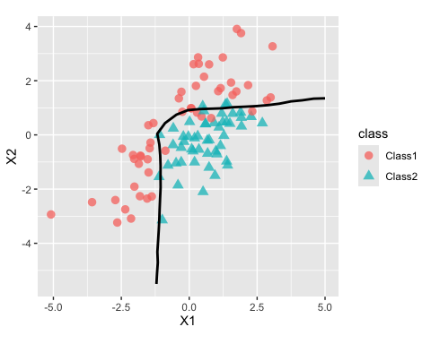

TabPFN, meaning prior fitted networks for tabular data, is a deep-learning model. See:
- Transformers Can Do Bayesian Inference (arXiv, 2021)
- TabPFN: A Transformer That Solves Small Tabular Classification Problems in a Second (arXiv, 2022)
- Accurate predictions on small data with a tabular foundation model (Nature, 2025)
This R package is a wrapper of the Python library via reticulate. It has an idiomatic R syntax using standard S3 methods.
Installation
You can install the development version of TabPFN like so:
You’ll need a Python virtual environment to access the underlying library. After installing the R package, you could use this code to create an appropriate environment:
library(reticulate)
python <-install_python()
virtualenv_install(
"r-tabpfn",
packages = c("numpy", "tabpfn"),
python = python
)
# check the install:
py_config()
py_list_packages(envname = "r-tabpfn", type = "virtualenv")Example
On starting the TabPFN, it will see if the python packages are installed.
# Perhaps start by setting your virt env:
# reticulate::use_virtualenv("~/.virtualenvs/your-envir-name")
library(TabPFN)To fit a model:
reg_mod <- tab_pfn(mtcars[1:25, -1], mtcars$mpg[1:25])
reg_mod
#> tab_pfn Regression Model
#> Training set
#> ℹ 25 data points
#> ℹ 10 predictorsIn addition to the x/y interface shown above, there are also formula and recipes interfaces.
Prediction follows the usual S3 predict() method:
predict(reg_mod, mtcars[26:32, -1])
#> # A tibble: 7 × 1
#> .pred
#> <dbl>
#> 1 31.2
#> 2 23.7
#> 3 25.5
#> 4 14.9
#> 5 19.3
#> 6 13.9
#> 7 22.6While TabPFN isn’t a tidymodels package, it follows their prediction convention: a data frame is always returned with a standard set of column names.
For a classification model, the outcome should always be a factor vector. For example, using these data from the modeldata package:
library(modeldata)
library(ggplot2)
two_cls_train <- parabolic[1:400, ]
two_cls_val <- parabolic[401:500,]
grid <- expand.grid(X1 = seq(-5.1, 5.0, length.out = 25),
X2 = seq(-5.5, 4.0, length.out = 25))
cls_mod <- tab_pfn(class ~ ., data = two_cls_train)
grid_pred <- predict(cls_mod, grid)
grid_pred
#> # A tibble: 625 × 3
#> .pred_Class1 .pred_Class2 .pred_class
#> <dbl> <dbl> <fct>
#> 1 0.988 0.0119 Class1
#> 2 0.991 0.00870 Class1
#> 3 0.993 0.00660 Class1
#> 4 0.994 0.00580 Class1
#> 5 0.993 0.00682 Class1
#> 6 0.989 0.0108 Class1
#> 7 0.976 0.0244 Class1
#> 8 0.929 0.0710 Class1
#> 9 0.832 0.168 Class1
#> 10 0.631 0.369 Class1
#> # ℹ 615 more rowsThe fit looks fairly good when shown with out-of-sample data:
cbind(grid, grid_pred) |>
ggplot(aes(X1, X2)) +
geom_point(data = two_cls_val, aes(col = class, pch = class),
alpha = 3 / 4, cex = 3) +
geom_contour(aes(z = .pred_Class1), breaks = 1/ 2, col = "black", linewidth = 1) +
coord_equal(ratio = 1)
Code of Conduct
Please note that the TabPFN project is released with a Contributor Code of Conduct. By contributing to this project, you agree to abide by its terms.